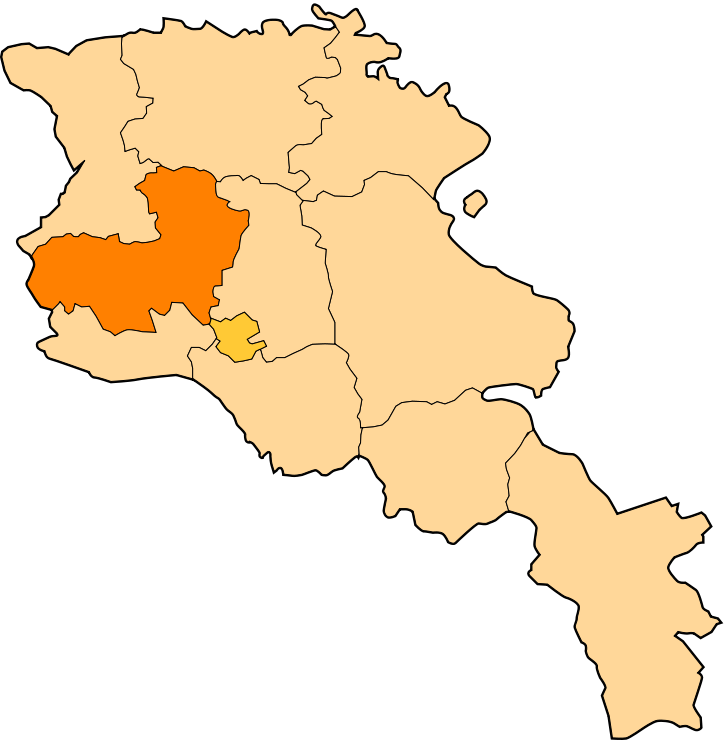

Հետ գնալ
Արագածոտնի մարզ
Արագածոտնի մարզ, մարզի կարգավիճակ ունեցող վարչատարածքային միավոր Հայաստանում։
Մարզկենտրոնը Աշտարակ քաղաքն է։Տարածքը՝ 2753 կմ2, բնակչությունը՝ 141 հազար մարդ։ Հայաստանի մարզերի շարքում տարածքի մեծությամբ միջին տեղ է գրավում,
իսկ բնակչության թվով գերազանցում է միայն Վայոց ձորի և Տավուշի մարզերին։
Արագածոտնի մարզն իր անունը ժառանգել է պատմական Այրարատ աշխարհի Արագածոտն գավառի անունից։
Արագածոտնի մարզի քաղաքային համայնքների թիվը 3 է՝
Արագածոտնի մարզի տարածաշրջաններն են՝
- Աշտարակ
- Ապարան
- Արագած
- Թալին